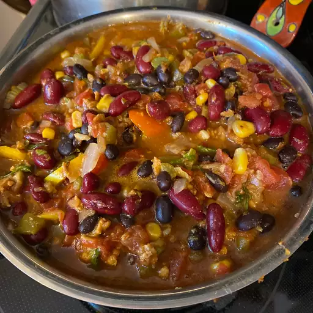

The Best Vegatarian Chili in the World

This spicy vegetarian chili is ready in no time and packed with vegetables, beans, and flavor! Break out your soup pot and fix up a batch of this delicious chili — it tastes even better the next day.
Ingredients
- 1 tablespoon olive oil
- 1/2 medium onion
- 2 tablespoons dried oregano
- 1 tablespoon salt
- 1 teaspoon ground cumin
- 2 bay leaves
- 2 stalks celery, chopped
- 2 green bell peppers, chopped
- 2 jalapeno peppers, chopped
- 3 cloves garlic, chopped
- 2 (4 ounce) cans chopped green chile peppers, drained
- 2 (12 ounce) packages vegatarian burger crumbles
- 3 (28 ounce) cans whole peeled tomatoes, crushed
- 1/4 cup chili powder
- 1 tablespoon ground black pepper
- 1 (15 ounce) can kidney beans, drained
- 1 (15 ounce) can garbanzo beans, drained
- 1 (15 ounce) can black beans
- 1 (15 ounce) can whole kernel corn
Directions
- Heat olive oil in a large pot over medium heat. Stir in onion and season with oregano, salt, cumin, and bay leaves. Cook and stir until onion is tender; stir in celery, green bell peppers, jalapeños, and garlic. Add green chile peppers and cook until heated through. Stir in vegetarian burger crumbles; reduce heat to low, cover pot, and simmer for 5 minutes.
- Stir in tomatoes; season with chili powder and black pepper. Stir in kidney beans, garbanzo beans, and black beans. Bring to a boil, reduce heat to low, and simmer for 45 minutes.
- Stir in the corn, and continue cooking for 5 minutes before serving.